Home / Past papers / MLP Quiz 1 / this paper
IIT M QUIZ 1 FOUNDATION DAD DIPLOMA QPE2 16 Oct 2022 - 16 Oct 2022

- YES
- NO
 Which of the following options represent the possible type of machine learning algorithm does the cluster plot shown in Figure 2 demonstrate?
Which of the following options represent the possible type of machine learning algorithm does the cluster plot shown in Figure 2 demonstrate? - K-means clustering
- Linear regression
- Logistic regression
- PCA
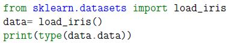
What will be the output of the following code?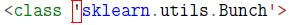
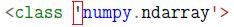
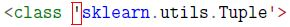
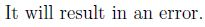
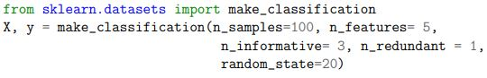
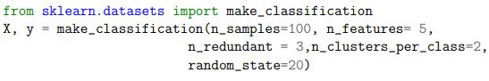
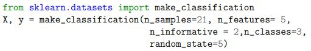
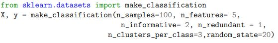
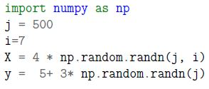
Go through the code snippet given below: What will be the shape of the feature matrix (X.shape) and the label vector (y.shape)?- (2000, 28) and (2000, 1)
- (28, 2000) and (1505,1)
- (500, 7) and (500,)
- (2000, 7) and (1505,)
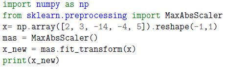
Which of the following options is likely to be the correct output of the code snippet given below?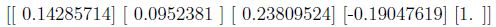
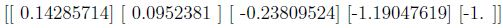
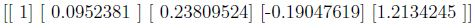
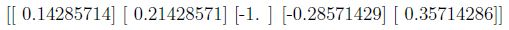
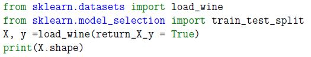
Consider the following code snippet: Above code returns (178, 13) as output. Which of the following would be the correct code(s) to split X and y such that you have exactly 36 samples for test data?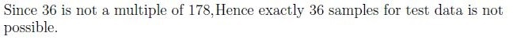
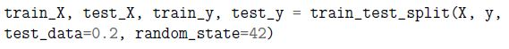
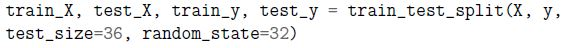
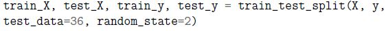
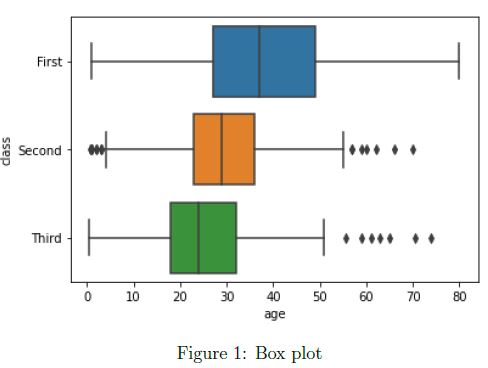
In the figure 1, what are the names of classes arranged in the decreasing order of the median values?- First > Second > Third
- Third > Second > First
- Second < Third < First
- Third > First > Second
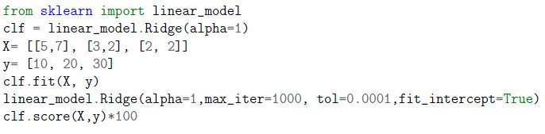
Which of the following is likely to be the correct output of the code given below?- 0.12
- 190.31
- 0.93
- 90.02
- No evaluation metrics is mentioned, hence it will produce error
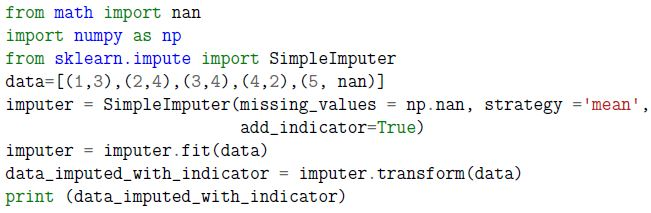
Which of the following is likely to be the correct output of the code given below?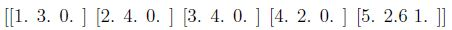
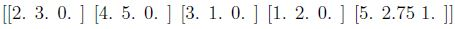
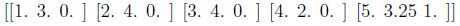
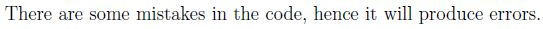
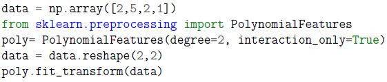
Consider the following code snippet: Which of the following could be the correct output?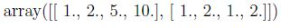
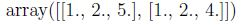
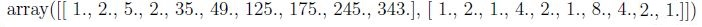
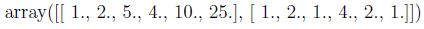
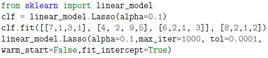
Which of the following options will be the correct output of print(clf.coef_)?- [ 0.35 -0. -0. ]
- [-0.85,0]
- [3,2,1,2]
- Given code block will return an error.
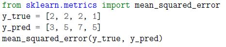
Go through the code snippet given below and mark the correct output.- 1
- 3.5
- 5
- 25
- 4
- 12.75
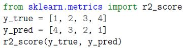
Go through the code snippet given below and mark the correct output.- 0.61
- 0.83
- 0.91
- 1
- -3
- 2
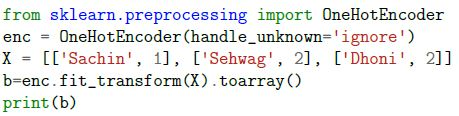
Which of the following is likely to be the correct output of the code given below?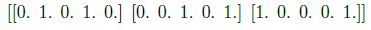
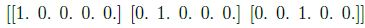
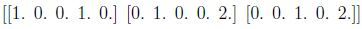
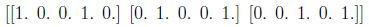
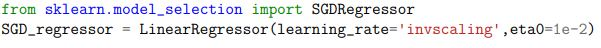
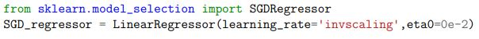
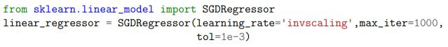

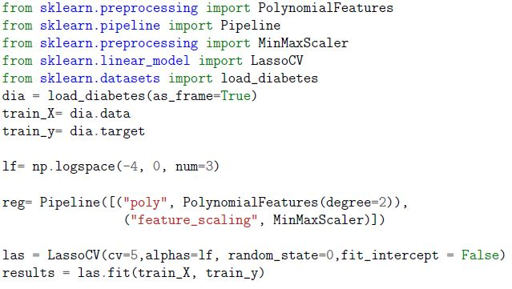
Go through the code snippet given below and answer the following questions. Which of the following could be the possible output of print(results.alpha_)?- -0.528
- -5
- 0.528
- 1.e-03
- 0.01
- Nonproliferation of classes
- Best Estimator
- Proportion
- Consistency
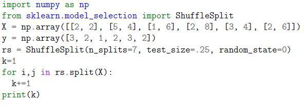
Enter the correct output of the following code block.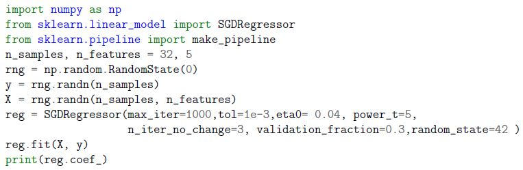
Go through the code snippet given below and answer the given subquestions.- array([ 0.02645639, -0.09121131, 0.09350173, 0.11821129])
- [-0.05102706 0.11483443 -0.01544466 0.04813268 0.05634579]
- array([-0.22622766, -0.0, -0.0])
- Given code will return an error because the data-set is not given.
- -0.528
- 1
- 0.528
- Given code will return an error
Answer key
- Q1 (MCQ, 0 marks): A
- Q2 (MCQ, 1 marks): A
- Q3 (MCQ, 2 marks): B
- Q4 (MCQ, 2 marks): C
- Q5 (MCQ, 2 marks): C
- Q6 (MCQ, 2 marks): D
- Q7 (MCQ, 2 marks): C
- Q8 (MCQ, 2 marks): A
- Q9 (MCQ, 2 marks): D
- Q10 (MCQ, 3 marks): C
- Q11 (MCQ, 3 marks): A
- Q12 (MCQ, 3 marks): D
- Q13 (MCQ, 3 marks): F
- Q14 (MCQ, 3 marks): E
- Q15 (MCQ, 3 marks): A
- Q16 (MCQ, 3 marks): C
- Q17 (MCQ, 3 marks): E
- Q18 (MSQ, 3 marks): A, D
- Q19 (SA, 2 marks): 8
- Q20 (MCQ, 3 marks): B
- Q21 (MCQ, 3 marks): D
Concepts this paper tests
Auto-generated summary from the source site. Handy as a checklist; the lessons above explain each idea from scratch.
Summary of Core Topics, Concepts, Principles, and Equations
Machine Learning Concepts
Supervised vs. Unsupervised Learning
- Supervised Learning: Algorithms that learn from labeled data (e.g., linear regression, logistic regression).
- Unsupervised Learning: Algorithms that learn from unlabeled data (e.g., K-means clustering).
Clustering Algorithms
- K-means Clustering: Partitions data into k clusters based on feature similarity.
- Equation: Minimize the within-cluster sum of squares (WCSS).
Regression Algorithms
Linear Regression: Models the relationship between a dependent variable and one or more independent variables.
- Equation:
Logistic Regression: Used for binary classification.
- Equation:
Dimensionality Reduction
Principal Component Analysis (PCA): Reduces the dimensionality of data while preserving variance.
- Equation: , where is the matrix of eigenvectors.
Model Evaluation Metrics
Mean Squared Error (MSE): Measures the average squared difference between predicted and actual values.
- Equation:
R-squared (R²): Measures the proportion of variance in the dependent variable that is predictable from the independent variables.
- Equation:
Data Preprocessing
Scaling: Standardizing or normalizing features.
- Standard Scaling:
- Min-Max Scaling:
Imputation: Handling missing data.
- Mean Imputation: Replace missing values with the mean of the feature.
Polynomial Features
PolynomialFeatures: Generates polynomial and interaction features.
- Equation: For degree=2,
Cross-Validation
- K-Fold Cross-Validation: Splits data into k folds and trains the model on k-1 folds, validating on the remaining fold.
- Equation: Average performance across all folds.
Regularization
Ridge Regression: Adds L2 regularization to linear regression.
- Equation:
Lasso Regression: Adds L1 regularization to linear regression.
- Equation:
Stochastic Gradient Descent (SGD)
SGDRegressor: Uses stochastic gradient descent to fit linear models.
- Equation: , where is the learning rate.
Software Engineering Concepts
Scikit-Learn API
- Design Principles: Consistency, nonproliferation of classes, best estimator.
Pipeline: Combines multiple steps into a single object.
- Example:
Pipeline([("poly", PolynomialFeatures(degree=2)), ("feature_scaling", MinMaxScaler())])
- Example:
Data Splitting
train_test_split: Splits data into training and testing sets.
- Example:
train_test_split(X, y, test_size=0.2, random_state=42)
- Example:
One-Hot Encoding
OneHotEncoder: Converts categorical features into a one-hot encoded format.
- Example:
OneHotEncoder(handle_unknown='ignore')
- Example:
Mathematical Concepts
Linear Algebra
- Matrix Operations: Essential for understanding transformations and feature scaling.
- Eigenvalues and Eigenvectors: Important for PCA.
Probability and Statistics
- Mean, Variance, and Standard Deviation: Fundamental for data preprocessing and evaluation metrics.
- Normal Distribution: Basis for many statistical methods and assumptions in machine learning.